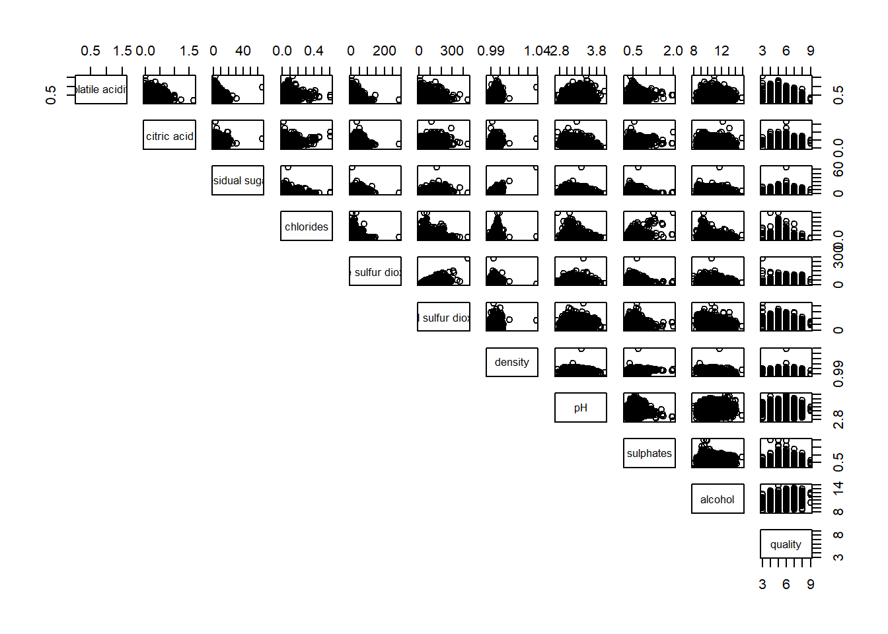

Show code
pacman::p_load('plotly', 'tidyverse')Ternary plots are a way of displaying the distribution and variability of three-part compositional data. For example, the proportion of aged, economy active and young population or sand, silt, and clay in soil. Its display is a triangle with sides scaled from 0 to 1. Each side represents one of the three components. A point is plotted so that a line drawn perpendicular from the point to each leg of the triangle intersect at the component values of the point.
In this hands-on, we will learn how to build ternary plot programmatically using R for visualising and analysing the population structure of Singapore.
For this exercise, two main R packages will be used in this hands-on exercise, they are:
ggtern, a ggplot extension specially designed to plot ternary diagrams. The package will be used to plot static ternary plots.
Plotly R, an R package for creating interactive web-based graphs via plotly’s JavaScript graphing library, plotly.js . The plotly R libary contains the ggplotly function, which will convert ggplot2 figures into a Plotly object.
We will also need to ensure that selected tidyverse family packages readr, dplyr and tidyr are also installed and loaded.
In this exercise, version 3.2.1 of ggplot2 will be installed instead of the latest version of ggplot2. This is because the current version of ggtern package is not compatible to the latest version of ggplot2. The code chunks below will accomplish the task.
pacman::p_load('plotly', 'tidyverse')Due to some technical issues, ggtern is currently not available for downloading via cran. We need to download ggtern from the archive by using the code chunk below. The latest archive version is 3.4.1.
require(devtools)
install_version("ggtern", version = "3.4.1", repos = "http://cran.us.r-project.org")vctrs (0.6.1 -> 0.6.2) [CRAN]
rlang (1.1.0 -> 1.1.1) [CRAN]Next, load ggtern package into R environment by using the code chunk below.
library(ggtern)For the purpose of this hands-on exercise, the Singapore Residents by Planning AreaSubzone, Age Group, Sex and Type of Dwelling, June 2000-2018 data will be used. The data set has been downloaded and included in the data sub-folder of the hands-on exercise folder. It is called respopagsex2000to2018_tidy.csv and is in csv file format.
To important respopagsex2000to2018_tidy.csv into R, read_csv() function of readr package will be used.
pop_data <- read_csv("data/respopagsex2000to2018_tidy.csv") Next, use the mutate() function of dplyr package to derive three new measures, namely: young, active, and old.
#Deriving the young, economy active and old measures
agpop_mutated <- pop_data %>%
mutate(`Year` = as.character(Year))%>%
spread(AG, Population) %>%
mutate(YOUNG = rowSums(.[4:8]))%>%
mutate(ACTIVE = rowSums(.[9:16])) %>%
mutate(OLD = rowSums(.[17:21])) %>%
mutate(TOTAL = rowSums(.[22:24])) %>%
filter(Year == 2018)%>%
filter(TOTAL > 0)Use ggtern() function of ggtern package to create a simple ternary plot.
#Building the static ternary plot
ggtern(data=agpop_mutated,aes(x=YOUNG,y=ACTIVE, z=OLD)) +
geom_point()
#Building the static ternary plot
ggtern(data=agpop_mutated, aes(x=YOUNG,y=ACTIVE, z=OLD)) +
geom_point() +
labs(title="Population structure, 2015") +
theme_rgbw()
The code below create an interactive ternary plot using plot_ly() function of Plotly R.
# reusable function for creating annotation object
label <- function(txt) {
list(
text = txt,
x = 0.1, y = 1,
ax = 0, ay = 0,
xref = "paper", yref = "paper",
align = "center",
font = list(family = "serif", size = 15, color = "white"),
bgcolor = "#b3b3b3", bordercolor = "black", borderwidth = 2
)
}
# reusable function for axis formatting
axis <- function(txt) {
list(
title = txt, tickformat = ".0%", tickfont = list(size = 10)
)
}
ternaryAxes <- list(
aaxis = axis("Young"),
baxis = axis("Active"),
caxis = axis("Old")
)
# Initiating a plotly visualization
plot_ly(
agpop_mutated,
a = ~YOUNG,
b = ~ACTIVE,
c = ~OLD,
color = I("black"),
type = "scatterternary"
) %>%
layout(
annotations = label("Ternary Markers"),
ternary = ternaryAxes
)Correlation coefficient is a popular statistic that is used to measure the type and strength of the relationship between two variables. The values of a correlation coefficient ranges between -1.0 and 1.0. A correlation coefficient of 1 shows a perfect linear relationship between the two variables, while a -1.0 shows a perfect inverse relationship between the two variables. A correlation coefficient of 0.0 shows no linear relationship between the two variables.
When multivariate data is used, the correlation coefficeints of the pair comparisons are displayed in a table form, known as correlation matrix or scatterplot matrix. There are three broad reasons for computing a correlation matrix:
To reveal the relationship between high-dimensional variables in terms of pairs.
To input into other analyses. For example, people commonly use correlation matrices as inputs for exploratory factor analysis, confirmatory factor analysis, structural equation models, and linear regression when excluding missing values pairwise.
As a diagnostic when checking other analyses. For example, with linear regression a high amount of correlations suggests that the linear regression’s estimates will be unreliable.
When the data is large, both in terms of the number of observations and the number of variables, Corrgram tends to be used to visually explore and analyse the structure and the patterns of relations among variables. It is designed based on two main schemes:
Rendering the value of a correlation to depict its sign and magnitude, and
Reordering the variables in a correlation matrix so that “similar” variables are positioned adjacently, facilitating perception.
In this hands-on exercise, we will learn how to plot data visualisation for visualising a correlation matrix with R. It consists of three main sections. First, we will learn how to create correlation matrix using pairs() of R Graphics. Next, we will learn how to plot corrgram using corrplot package of R. Lastly, we will learn how to create an interactive correlation matrix using plotly R.
We will use the code chunk below to install and launch corrplot, ggpubr, plotly and tidyverse.
pacman::p_load(corrplot, ggstatsplot, tidyverse)In this hands-on exercise, the Wine Quality Data Set of UCI Machine Learning Repository will be used. The data set consists of 13 variables and 6497 observations. For the purpose of this exercise, we have combined the red wine and white wine data into one data file. It is called wine_quality and is in csv file format.
First, let us import the data into R by using read_csv() of readr package. Notice that beside quality and type, the rest of the variables are numerical and continuous data type.
wine <- read_csv("data/wine_quality.csv")There is more than one way to build scatterplot matrix with R. In this section, you will learn how to create a scatterplot matrix by using the pairs function of R Graphics.
Before you continue to the next step, we should read the syntax description of pairs function.
The figure below shows the scatter plot matrix of Wine Quality Data. It is a 11 by 11 matrix.
pairs(wine[,1:11])
The required input of pairs() can be a matrix or data frame. The code chunk used to create the scatterplot matrix is relatively simple. It uses the default pairs function. Columns 2 to 12 of wine dataframe is used to build the scatterplot matrix. The variables are: fixed acidity, volatile acidity, citric acid, residual sugar, chlorides, free sulfur dioxide, total sulfur dioxide, density, pH, sulphates and alcohol.
pairs(wine[,2:12])
pairs function of R Graphics provided many customisation arguments. For example, it is a common practice to show either the upper half or lower half of the correlation matrix instead of both. This is because a correlation matrix is symmetric.
To show the lower half of the correlation matrix, the upper.panel argument will be used as shown in the code chunk below.
pairs(wine[,2:12], upper.panel = NULL)
Similarly, you can display the upper half of the correlation matrix by using the code chunk below.
pairs(wine[,2:12], lower.panel = NULL)
To show the correlation coefficient of each pair of variables instead of a scatter plot, panel.cor function will be used. This will also show higher correlations in a larger font.
Don’t worry about the details for now - just type this code into your R session or script. Let’s have a more fun way to display the correlation matrix.
panel.cor <- function(x, y, digits=2, prefix="", cex.cor, ...) {
usr <- par("usr")
on.exit(par(usr))
par(usr = c(0, 1, 0, 1))
r <- abs(cor(x, y, use="complete.obs"))
txt <- format(c(r, 0.123456789), digits=digits)[1]
txt <- paste(prefix, txt, sep="")
if(missing(cex.cor)) cex.cor <- 0.8/strwidth(txt)
text(0.5, 0.5, txt, cex = cex.cor * (1 + r) / 2)
}
pairs(wine[,2:12],
upper.panel = panel.cor)
One of the major limitations of the correlation matrix is that the scatter plots appear very cluttered when the number of observations is relatively large (i.e. more than 500 observations). To overcome this problem, the Corrgram data visualisation technique suggested by D. J. Murdoch and E. D. Chow (1996) and Friendly, M (2002) and will be used. There are at least three R packages to plot corrgram:
On top that, some R packages like ggstatsplot package also provides functions for building corrgram. In this section, we will learn how to visualising correlation matrix by using ggcorrmat() of ggstatsplot package.
On of the advantage of using ggcorrmat() over many other methods to visualise a correlation matrix is it’s ability to provide a comprehensive and yet professional statistical report as shown in the figure below.
Things to learn from the code chunk:
cor.vars argument is used to compute the correlation matrix needed to build the corrgram.ggcorrplot.args argument provides additional (mostly aesthetic) arguments that will be passed to ggcorrplot::ggcorrplot function. The list should avoid any of the following arguments since they are already internally being used: corr, method, p.mat, sig.level, ggtheme, colors, lab, pch, legend.title, digits.
ggstatsplot::ggcorrmat(
data = wine,
cor.vars = 1:11)The sample sub-code chunk below can be used to control specific component of the plot such as the font size of the x-axis, y-axis, and the statistical report.
ggplot.component = list(
theme(text=element_text(size=5),
axis.text.x = element_text(size = 8),
axis.text.y = element_text(size = 8)))Since ggstasplot is an extension of ggplot2, it also supports faceting. However the feature is not available in ggcorrmat() but in the grouped_ggcorrmat() of ggstatsplot.
Things to learn from the code chunk:
to build a facet plot, the only argument needed is grouping.var.
Besides group_ggcorrmat(), patchwork package is used to create the multiplot. plotgrid.args argument provides a list of additional arguments passed to patchwork::wrap_plots, except for guides argument which is already separately specified earlier.
Likewise, annotation.args argument is calling plot annotation arguments of patchwork package.
grouped_ggcorrmat(
data = wine,
cor.vars = 1:11,
grouping.var = type,
type = "robust",
p.adjust.method = "holm",
plotgrid.args = list(ncol = 2),
ggcorrplot.args = list(outline.color = "black",
hc.order = TRUE,
tl.cex = 10),
annotation.args = list(
tag_levels = "a",
title = "Correlogram for wine dataset",
subtitle = "The measures are: alcohol, sulphates, fixed acidity, citric acid, chlorides, residual sugar, density, free sulfur dioxide and volatile acidity",
caption = "Dataset: UCI Machine Learning Repository"
)
)
In this hands-on exercise, we will focus on corrplot. However, you are encouraged to explore the other two packages too. Before getting started, you are required to read An Introduction to corrplot Package in order to gain basic understanding of corrplot package.
Before we can plot a corrgram using corrplot(), we need to compute the correlation matrix of wine data frame. In the code chunk below, cor() of R Stats is used to compute the correlation matrix of wine data frame.
wine.cor <- cor(wine[, 1:11])Next, corrplot() is used to plot the corrgram by using all the default setting as shown in the code chunk below.
Notice the following things:
The default visual object used to plot the corrgram is circle.
The default layout of the corrgram is a symmetric matrix.
The default colour scheme is diverging blue-red. Blue colours are used to represent pair variables with positive correlation coefficients and red colours are used to represent pair variables with negative correlation coefficients.
The intensity of the colour or also know as saturation is used to represent the strength of the correlation coefficient. Darker colours indicate relatively stronger linear relationship between the paired variables. On the other hand, lighter colours indicates relatively weaker linear relationship.
corrplot(wine.cor)
In corrplot package, there are seven visual geometrics (parameter methods) which can be used to encode the attribute values. They are: circle, square, ellipse, number, shade, color and pie. The default is circle. As shown in the previous section, the default visual geometric of corrplot matrix is circle. However, this default setting can be changed by using the method argument as shown in the code chunk below.
Feel free to change the method argument to other supported visual geometrics!
corrplot(wine.cor,
method = "ellipse") 
corrplor() supports three layout types, namely: “full”, “upper” or “lower”. The default is “full” which display full matrix. The default setting can be changed by using the type argument of corrplot().
corrplot(wine.cor,
method = "ellipse",
type="lower")
The default layout of the corrgram can be further customised. For example, arguments diag and tl.col are used to turn off the diagonal cells and to change the axis text label colour to black colour respectively as shown in the code chunk and figure below.
Please feel free to experiment with other layout design argument such as tl.pos, tl.cex, tl.offset, cl.pos, cl.cex and cl.offset, just to mention a few of them.
corrplot(wine.cor,
method = "ellipse",
type="lower",
diag = FALSE,
tl.col = "black")
With corrplot package, it is possible to design corrgram with mixed visual matrix of one half and numerical matrix on the other half. In order to create a coorgram with mixed layout, the corrplot.mixed(), a wrapped function for mixed visualisation style will be used. The figure below shows a mixed layout corrgram plotted using wine quality data.
corrplot.mixed(wine.cor,
lower = "ellipse",
upper = "number",
tl.pos = "lt",
diag = "l",
tl.col = "black")
The code chunk used to plot the corrgram is shown below.
Notice that argument lower and upper are used to define the visualisation method used. In this case ellipse is used to map the lower half of the corrgram and numerical matrix (i.e. number) is used to map the upper half of the corrgram. The argument tl.pos, on the other, is used to specify the placement of the axis label. Lastly, the diag argument is used to specify the glyph on the principal diagonal of the corrgram.
corrplot.mixed(wine.cor,
lower = "ellipse",
upper = "number",
tl.pos = "lt",
diag = "l",
tl.col = "black")
In statistical analysis, we are also interested to know which pair of variables their correlation coefficients are statistically significant. With the corrplot package, we can use the cor.mtest() to compute the p-values and confidence interval for each pair of variables.
wine.sig = cor.mtest(wine.cor, conf.level= .95)We can then use the p.mat argument of corrplot function as shown in the code chunk below.
The figure below shows a corrgram combined with the significant test. The corrgram reveals that not all correlation pairs are statistically significant. For example the correlation between total sulfur dioxide and free surfur dioxide is statistically significant at significant level of 0.1 but not the pair between total sulfur dioxide and citric acid.
corrplot(wine.cor,
method = "number",
type = "lower",
diag = FALSE,
tl.col = "black",
tl.srt = 45,
p.mat = wine.sig$p,
sig.level = .05)
Matrix reorder is very important for mining the hidden structure and pattern in a corrgram. By default, the order of attributes of a corrgram is sorted according to the correlation matrix (i.e. “original”). The default setting can be overwritten by using the order argument of corrplot(). Currently, the corrplot package supports four sorting methods, they are:
“AOE” is for the angular order of the eigenvectors. See Michael Friendly (2002) for details.
“FPC” for the first principal component order.
“hclust” for hierarchical clustering order, and “hclust.method” for the agglomeration method to be used.
“alphabet” for alphabetical order.
More algorithms can be found in the seriation package.
corrplot.mixed(wine.cor,
lower = "ellipse",
upper = "number",
tl.pos = "lt",
diag = "l",
order="AOE",
tl.col = "black")
If using hclust, corrplot() can draw rectangles around the corrgram based on the results of hierarchical clustering.
corrplot(wine.cor,
method = "ellipse",
tl.pos = "lt",
tl.col = "black",
order="hclust",
hclust.method = "ward.D",
addrect = 3)
Michael Friendly (2002). “Corrgrams: Exploratory displays for correlation matrices”. The American Statistician, 56, 316–324.
D.J. Murdoch, E.D. Chow (1996). “A graphical display of large correlation matrices”. The American Statistician, 50, 178–180.
ggcormat() of ggstatsplot package
corrplot. A graphical display of a correlation matrix or general matrix. It also contains some algorithms to do matrix reordering. In addition, corrplot is good at details, including choosing color, text labels, color labels, layout, etc.
corrgram calculates correlation of variables and displays the results graphically. Included panel functions can display points, shading, ellipses, and correlation values with confidence intervals.